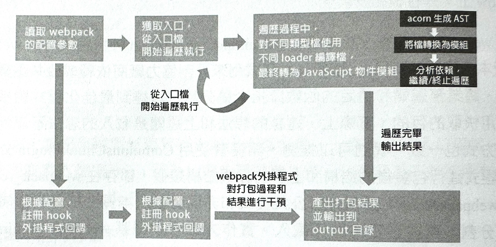
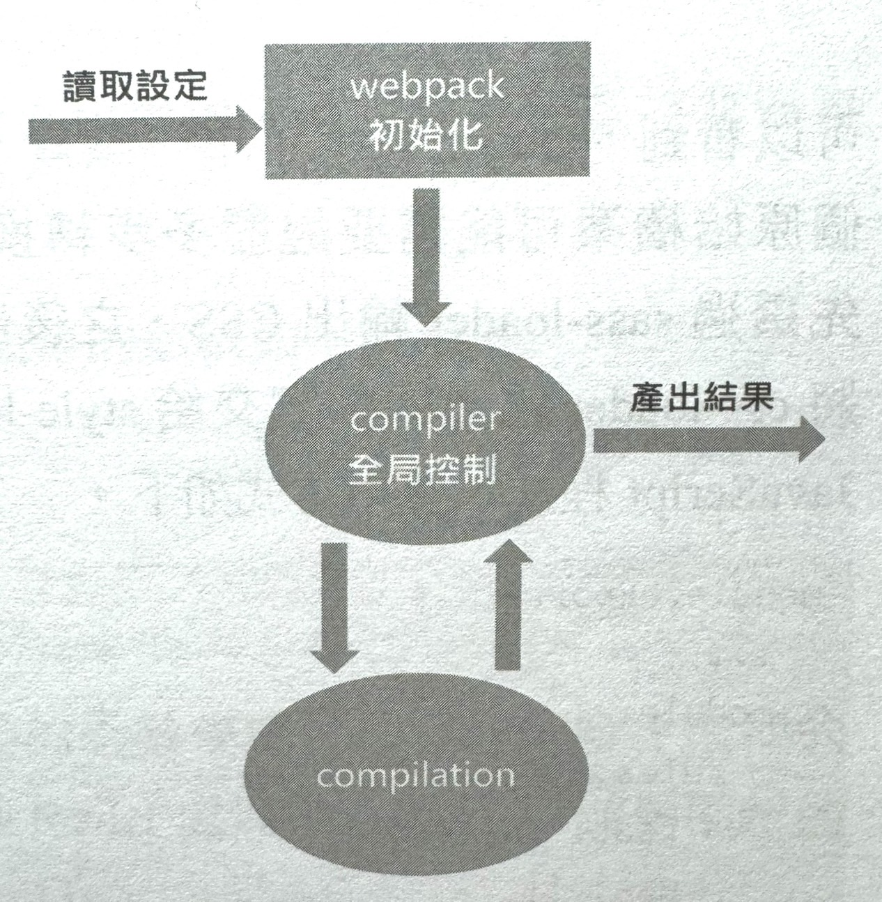
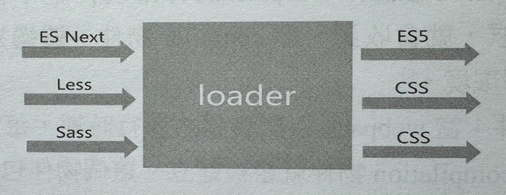

1-6-8 webpack 前端知識點
CommonJS 標準下的包裝結果
如何者手分析 CommonJS 標準下的包裝結果？首先，如下所示，建立並切入到專案，進行初始化。
mkdir webpack-demo
cd webpack-demo
npm init -y
接著，安裝 webpack 的最新版本，安裝指令如下。
npm install --save-dev webpack
npm install --save-dev webpack-cli
在根目錄下建立 index.html，其中的程式如下。
<!DOCTYPE html>
<html lang="en">
<head>
<title>Document</title>
</head>
<body>
<div id="app"></div>
<script src="./dist/main.js"></script>
</body>
</html>
然後建立 ./src 資料夾，在 src 資料夾中，因為我們要研究模組化打包產出，這有關依賴關係，所以要在 ./src 目錄下建立 hello.js 和 index.js。index.js 為入口指令稿，它將依賴 hello.js，實際程式如下。
const sayHello = require('./hello')
console.log(sayHello('lucas'))
hello.js 中的內容如下。
module.exports = function(name) {
return 'hello' + name
}
這裡為了示範，採用了 CommonJS 標準，也沒有加入 Babel 編譯環節。直接執行以下指令，可以獲得產出，產出內容出現在 ./dist 檔案中。
node_modules/.bin/webpack --mode development
開啟 ./dist/main.js，可以看到最後的編譯結果。
/*
* ATTENTION: The "eval" devtool has been used (maybe by default in mode: "development").
* This devtool is neither made for production nor for readable output files.
* It uses "eval()" calls to create a separate source file in the browser devtools.
* If you are trying to read the output file, select a different devtool (https://webpack.js.org/configuration/devtool/)
* or disable the default devtool with "devtool: false".
* If you are looking for production-ready output files, see mode: "production" (https://webpack.js.org/configuration/mode/).
*/
/******/ (() => { // webpackBootstrap
/******/ var __webpack_modules__ = ({
/***/ "./src/hello.js":
/*!**********************!*\
!*** ./src/hello.js ***!
\**********************/
/***/ ((module) => {
eval("module.exports = function(name) {\r\n return 'hello' + name\r\n}\n\n//# sourceURL=webpack://webpack-demo/./src/hello.js?");
/***/ }),
/***/ "./src/index.js":
/*!**********************!*\
!*** ./src/index.js ***!
\**********************/
/***/ ((__unused_webpack_module, __unused_webpack_exports, __webpack_require__) => {
eval("const sayHello = __webpack_require__(/*! ./hello */ \"./src/hello.js\")\r\nconsole.log(sayHello('lucas'))\n\n//# sourceURL=webpack://webpack-demo/./src/index.js?");
/***/ })
/******/ });
/************************************************************************/
/******/ // The module cache
/******/ var __webpack_module_cache__ = {};
/******/
/******/ // The require function
/******/ function __webpack_require__(moduleId) {
/******/ // Check if module is in cache
/******/ var cachedModule = __webpack_module_cache__[moduleId];
/******/ if (cachedModule !== undefined) {
/******/ return cachedModule.exports;
/******/ }
/******/ // Create a new module (and put it into the cache)
/******/ var module = __webpack_module_cache__[moduleId] = {
/******/ // no module.id needed
/******/ // no module.loaded needed
/******/ exports: {}
/******/ };
/******/
/******/ // Execute the module function
/******/ __webpack_modules__[moduleId](module, module.exports, __webpack_require__);
/******/
/******/ // Return the exports of the module
/******/ return module.exports;
/******/ }
/******/
/************************************************************************/
/******/
/******/ // startup
/******/ // Load entry module and return exports
/******/ // This entry module can't be inlined because the eval devtool is used.
/******/ var __webpack_exports__ = __webpack_require__("./src/index.js");
/******/
/******/ })()
;
把以上程式最核心的骨架分析出來，會發現它其實就是一個 IIFE（立即呼叫函數運算式）。
Ben Cherry 的著名文章 JavaScript Module Pattern: In-Depth 介紹了用 IIFE 實現模組化的多種進階嘗試，阮一峰老師在其部落格中也提到了相關內容。對用 IIFE 實現模組化並不陌生。 深入研究上述程式結果（已增加註釋），可以提煉出以下幾個關鍵點。
- webpack 的包裝結果就是一個 IIFE：一般被稱為 WebpackBootstrap。這個 IIFE 接收一個物件 modules 作為參數，modules 物件的 key 是依賴路徑，value 是經過簡單處理後的指令稿（它不完全等於我撰寫的業務指令稿。而是被 webpack 包裹後的內容）。
- 包裝結果中定義了一個重要的模組載入函數 __webpack_require__。
- 首先使用模組載入函數 __webpack_require__ 去載入入口模組， ./src/index.js。
- 載入函數 __webpack_require__ 使用了閉包變數 installedModules，它的作用是將已載入過的模組結果儲存在記憶體中。
ES 標準下的包裝結果
以上是以 CommonJS 標準為基礎的模組化寫法，而業務中的程式常常遵循 ESNext 模組化標準，並透過 Babel 進行編譯。
首先，安裝依賴，程式如下。
npm install --save-dev webpack
npm install --save-dev webpack-cli
npm install --save-dev babel-loader
nom install --save-dev @babel/core
npm install --save-dev @babel/preset-env
同時設定 package.json，即在 package.json 檔案中寫入以下內容。
"scripts": {
"build": "webpack --mode development --progress --display-modules --colors --display-reasons"
s
},
設定 npm script 以便執行 webpack 的建置流程程式，同時在 package.json 中加入如下所示的 Babel 設定。
"babel": {
"presets": ["@babel/preset-env"]
}
將 index.js 和 hello.js 改寫為 ESM 形式，如下。
// hello. js
const sayHello = name => `hello ${name}`
export default sayHello
// index. js
import sayHello from './hello.js'
console.log(sayHello('lucas'))
執行以下程式，獲得的包裝主體與之前的內容基本一致。
npm run build
但是在細節上，發現在執行指令稿中多了以下敘述。
__webpack_require __.r(webpack_exports__)
實際上，__webpack_require __.r 這個方法是用來給模組的 exports 物件加上 ES 模組化標準的標記的。
實際標記方式為：如果目前環境支援 Symbol 物件，則可以透過 Object.defineProperty 為 exports 物件的 Symbol.toStringTag 屬性設定值 Module，這樣做的結果是 exports 物件在呼叫 toString 方法時會傳回 Module，同時將 exports.__esModule 設定值為 true。
除了 CommonJS 和 ES Module 標準，webpack 和樣支援 AMD 標準，可以在此標準下對程式重新包裝來觀察這3種標準之間的差別。
隨選載入下的包裝結果
在現代化的業務中，尤其是在單頁應用中，我們常常會使用隨選載入的方式，那麼在這種相對較新的載入方式下，webpack 又會產出什麼樣的程式呢？
首先安裝 Babel 外掛程式，以支援動態引用（dynamic import）。
npm install --save-dev babel-plugin-dynamic-import-webpack
在 webpack.config.js 中増加相關外掛程式設定。
module.exports={
module: {
rules: [
{
test: /\.js$/,
exclude: /node_modules/,
loader:"babel-loader",
options: {
"plugins": ["dynamic-import-webpack"]
}
}
]
}
}
同時，在 index.js 檔案中使用動態引用的方式隨選載入 ./hello 檔案，實現隨選載入的程式如下。
import('./hello').then(sayHello =>{
console.log(sayHello('lucas'))
})
最後執行以下程式。
npm run build
這樣一來，發現重新建置後會輸出兩個檔案，分別是執行入口檔案 main.js 和非同步載入檔案 0.js，因為非同步隨選載入時，顯然不能把所有的程式再包裝到一個 bundle 中了。
0.js檔案中的內容如下。
main.js 檔案中的內容也與之前相比變化較大。
相比正常打包產出的結果，隨選載入下包裝的產出結果變化較大，也更加複雜，下面歸納了兩點變化。
- 多了一個 __webpack_require__.e
- 多了一個 webpackJsonp。
其中， __webpack_require__.e 實現非常重要，它初始化了一個 Promise 陣列， 使用 Promise.all() 非同步插入 script 指令稿；webpackJsonp 會掛載到全域物件 window 上，進行模組安裝。
熟悉 webpack 的可能會知道 CommonsChunkPlugin 外掛程式（在webpackV4 版本中已經被取代），這個外掛程式用來分割協力廠商依賴或公共函數庫的式，將業務邏輯和穩定的函數庫指令稿分離，以達到最佳化程式體積、合理使用快取的目的。實際上，這樣的想法和上述隨選載入的想法不謀而合，實作方式也一致。可以推測，開發者使用 CommonsChunkPlugin 外掛程式對程式進行包裝後的結構和上面的程式結構類似，都存在 webpack_require.e 和 webpackJsonp，因為分析公共程式和非同步載入本質上都是建置時進行程式分割，再在必要時進行載入。實作方式可以觀察 webpack_require.e 和 webpackJsonp 。
至此，分析了業務中幾乎所有的包裝方式及 webpack 產出結果。雖然這些內容較為晦澀，原始程式冗長而難以閱讀，但是這對了解 webpack 內的工作原理，以及撰寫 webpack loader、webpack 外掛程式意義重大。只有分析過這些最基本的編譯後的程式，才能對上線後的程式品質做到心裡有底。在出現問題時，能夠幫輕就熟。這也是進階 Web 工程師所必備的素養。
細節實現相對包裝思想設計來說並沒有那麼重要。也許試著去設計一個模組系統，了解一下 require.js 或 sea.js 的實現，就不會覺得這些內容那麼高深了。
webpack 工作基本原理
webpack 工作流程圖
簡單歸納起來，流程如下:
- 首先：webpack 會讀取專案中由開發者定義的 webpack.config.js 設定檔，或從 shell 敘述中獲得必要的參數。這是 webpack 內部接收業務設定資訊的 方式。這樣就完成了設定讀取的初步工作。
- 接著，將所需的 webpack 外掛程式產生實體，在 webpack 事件流上掛載外掛程式鉤子，這樣在合適的建置過程中，外掛程式就具備了改動產出結果的能力。
- 同時，根據設定所定義的入口檔案，從入口檔案（可以不只一個）開始，進行依賴收集，對所有依賴的檔案進行編譯，這個編譯過程依賴 loaders，不同類型的檔案根據開發者定義的不同loader 進行解析。編譯好的內容使用 acorn 或其他抽象語法樹能力，解析產生抽象語法樹，分析檔案依賴關係，將不同模組化語法（如 require）等取代為 __webpack_require__，即使用 webpack 自己的載入器進行模組化實現。
- 上述步驟完成後，產出結果，根據開發者設定，將結果包裝到對應目錄。
值得一提的是，在整個包裝過程中，webpack 和外掛程式都採用以事件流為基礎的發佈/訂閱模式，監聽某些關鍵過程，並在這些環節中執行外掛程式任務。最後，所有檔案的編譯和轉化都已經完成，輸出最後資源。
如果深入剖析原始程式，則上述過程可以用更加專業的術語歸納為：模組會經歷載入（loaded）、封存（sealed）、最佳化（optimized）、分段（chunked）、雜湊（hashed）和重新建立（restored）這幾個經典步驟。
抽象語法樹
在電腦科學中，抽象語法樹（Abstract Syntax Tree ，AST） 是原始程式語法結構的一種抽象表示。它以樹狀的形式表現程式語言的語法結構，樹上的每個節點都表示原始程式中的一種結構和表達。
之所以說語法是抽象的，是因為這裡的語法並不會表示出真寶語法中出現的每個細節。舉例來說，類似 if-condition-then 這樣的條件跳躍陳述式可以用帶有兩個分支的節點來表示。
AST 並不會被電腦所識別，更不會被執行，它是對裡式語言的一種表達，為程式分析提供了基礎。 webpack 將檔案轉換成 AST 的目的就是方便開發者分析模組檔案中的關鍵資訊。這樣一來，就可以知曉開發者到底寫了什麼東西，也就可以根據這些寫出的東西進行分析和擴充。在程式層面，可以把 AST 了解為一個object。舉例來說，下面這句簡單的設定陳述式：
var ast = 'AST demo'
轉為 AST 後的程式如下所示。
{
"type": "Program",
"start": 0,
"end": 20,
"body": [{
"type": "VariableDeclaration",
"start": 0,
"end": 20,
"declarations": [{
"type": "VariableDeclarator",
"start": 4,
"end": 20,
"id": {
"type": "Identifier",
"start": 4,
"end": 7,
"name": "ast"
},
"init": {
"type": "Literal",
"start": 10,
"end": 20,
"value": "AST demo",
"raw": "'AST demo'",
}
}],
"kind": "var"
}],
"sourceType": "module"
}
從以上程式中可以看出，AST 結果精確地表明了這是一筆變數宣告敘述，敘述起始於哪裡、設定值結果是什麼等資訊都被表達出來。
有了這樣的語法樹，開發者便可以針對原始檔案進行一些分析、加工或轉換操作了。
compiler 和 compilation
compiler 和 compilation 這兩個物件是 webpack 核心原理中最重要的概念。它們是了解 webpack 工作原理、loader 和外掛程式工作的基礎。
compiler 物件：它的實例包含了完整的 webpack設定，且全域只有一個compiler 實例，因此它就像webpack 的骨架或神經中樞。當外掛程式被產生實體的時候，就會收到一個 compiler 物件，透過這個物件可以造訪 webpack 的內部環境。
compilation 物件：當 webpack 以開發模式執行時期，每當檢測到檔案變化時，一個新的 compilation 物件就會被建立。這個物件包含了目前的模組資源、編譯產生資源、變化的檔案等資訊。也就是說，所有建置過程中讀取設定產生的建置資料都會被儲存在該物件上，它也掌控著建置過程中的每一個環節。該物件還提供了很多事件回呼供外掛程式做擴充。
兩者的關係可以透過圖2 來說明。
webpack 的建置過程是透過 compiler 控制流程，透過 compilation 進行程式解析的。在開發外掛程式時，我們可以從 compiler 物件中獲得所有與 webpack 主環授相關的內容，包含事件鉤子。
compiler 物件和 compilation 物件都繼承自 tapable 函數庫，該函數庫曝露了所有和事件相關的發佈/訂閱的方法。webpack 中以事件流為基礎的 tapable 函數庫不僅能確保外掛程式的有序性，還能使整個系統擴充性更好。
撰寫 webpack loader
熟悉了概念，下面就來進行實戰，了解如何撰寫一個 webpack loader。事實上，在 webpack 中，loader 是真正發生魔法的階段：Babel 將 ES Next 編譯成 ES5,sass-loader 將 SCSS/Sass 編譯成 CSS，等等，都是由相關的 loader 或 plugin 完成的。因此，從直觀上了解，loader 的工作就是接收原始檔案，對原始檔案進行處理，並傳回編譯後的檔案，如圖3所示。
可以看到，loader 秉承了單一職責，完成了最小單元的檔案轉換。當然，一個原始檔案可能需要經歷多步轉換才能正常使用，舉例來說，Sass 檔案會先透過 sass-loader 輸出 CSS，之後將內容交給 css-loader 處理，甚至還需要將 css-loader 輸出的內容交給 style-loader 處理，並轉換成透過指令稿載入的 JavaScript 程式，使用方式如下。
module.exports = {
//...
module: {
rules: [{
test:/\.less$/,
use: [{
loader:'style-loader' // 透過 Javascript 字串建立 style node
},{
loader:'css-loader' // 編譯 CSS 使其符合 CommonJS 標準
},{
loader:'less-loader'// 將 Less編譯為 CSS
}]
}]
}
}
當串聯地呼叫多個 loader 去轉換一個檔案時，每個 loader 都會鏈式地循序執行。在 webpack 中，在同一檔案存在多個比對 loader 的情況下，各個 loader 的執行過程會遵循以下原則。
- loader 的執行順序和設定順序是相反的，即設定的最後一個 loader 最先執行，第一個 loader 最後執行。
- 第一個執行的 loader 接收原始檔案中的內容作為參數，其他 loader 接收前一個執行的 loader 的傳回值作為參數。最後執行的 loader 會傳回最後結果。
下圖所示的流程就對應了上面程式中的設定內容。
因此，在開發一個 loader 時，只需關心輸入和輸出，但需要注意保持其職責的單一性。 不難了解，loader 的本質就是函數，其最簡單的結構如下所示。
module.exports = function(source){
// some magic...
return content
}
loader 就是一個以 CommonJS 標準為基礎的函數模組，它接收內容（這裡的內容可能是原始檔案，也可能是經過其他 loader 處理後的結果），並傳回新的內容。
更進一步，我們知道在設定 webpack 時，可以對 loader 增加一些設定，例如著名的 babel-loader 的簡單設定，如下所示。
module: {
rules: [{
test: /\.js$/,
exclude: /node_modules/,
loader: "babel-loader",
options: {
"plugins": [
"dynamic-import-webpack"
]
}
}]
}
這樣一來，上文中簡單的 loader 寫法便不能滿足需求了，因為撰寫 loader 時，除了撰寫 source 內容，還需要根據開發者設定的 options 資訊進行建置訂製化處理，以輸出最後的結果。那麼，如何取得 options 呢？這時就需要用到 loader-utils 模組了。
const loaderUtils = require("loader-utils")
module.exports = function(source) {
// 取得開發者設定的 options
const options = loaderUtils.getOptions(this)
// some magic...
return content
}
另外，對於 loader 傳回的內容，在實際開發中，單純對 content 進行改寫並傳回改寫後的內容，也許是不夠的。
舉例來說，我們想對 loader 處理過程中的錯誤進行捕捉，或想匯出 sourceMap 等資訊時，該如何做呢？
這種情況需要用 loader 中的 this.callback 來傳回內容。this.callback 中可以傳入 4 個參數，分別如下。
- error: 當 loader 出錯時向外拋出一個 error。
- content: 經過 loader 編譯後需要匯出的內容。
- sourceMap: 為方便偵錯編譯後的 source map。
- ast: 本次編譯產生的抽象語法樹。之後執行的 loader 可以直接使用這個 AST ，進而省去重複產生 AST 的過程。
使用 this.callback 後，我們的 loader 程式就變得更加複雜了，同時能夠處理更加多樣的需求，舉例來說，下面的程式可用於取得開發者傳入的設定資訊，並根據資訊做出處理。
module.exports = function (source) {
//取得開發者設定的 options
const options = loaderUtils.getOptions(this)
// some magic...
// return content
this.callback(null, content)
}
注意，當使用 this.callback傳 回內容時，該 loader 必須傳回 undefined ，這樣webpack 就知道該 loader 傳回的結果在 this.callback 中，而不在 return 中。
這裡的 this 指向誰？事實上，這裡的 this 指向的是一個叫 loaderContext 的 loader-runner 特有物件。如果根究底，就要細讀 webpack loader 部分的相關原始程式了。
預設情況下，webpack 傳給 loader 的內容來源都是 UTF-8 格式編碼的字串。 但 file-loader 這個常用的 loader 不是處理文字檔的，而是處理二進位檔案的，在這種情況下，可以透過 source instanceof Buffer === true 來判斷內容來源類型，範例如下。
module.exports = function (source) {
source instanceof Buffer === true
return source
}
如果自訂的 loader 也會傳回二進位檔案，則需要在檔案中顯性註明，如下所示。
module.exports.raw = true
當然，還會有使用非同步 loader 的情況，即並不能同步完成對 source 的處理的情況，這時使用簡單的 async-await即可，程式如下。
module.exports = async function(source){
function timeout(delay){
return new Promise((resolve, reject) => {
setTimeout(() => {
resolve(source)
}, delay)
})
}
const content = await timeout(1000)
this.callback(null, content)
}
另一種非同步 loader 的解決方案是使用 webpack 提供的 this.async，呼叫 this.async 會傳回一個回呼函數，可以在非同步作業完成後進行呼叫。上面的範例程式可以改寫為以下形式。
module.exports = async function(source){
function timeout(delay){
return new Promise((resolve, reject) => {
setTimeout(() =>{
resolve(source)
}, delay)
});
}
const callback = this.async()
timeout(1000).then(data =>{
callback(null, data)
})
}
實際上，less-loader，翻看其原始程式，就能發現它的核心是利用 Less 這個函數庫來解析 less 樣式程式，less 函數庫解析後會傳回一個 Promise，因此 less-loader 是非同步的，其正是運用了 this.async() 來實現的。
工趕師想要進階，就一定要學以致用，解決實際問題。下面就來撰寫一個 path-replace-loader 來實際演練一下。這個loader 將允許把 require 敘述中的 base path 取代為動態指定的 path，使用和設定方式如下。
module.exports = {
module: {
rules: [{
test: /\.js$/,
loader: 'path-replace-loader',
exclude: /(mode_modules)/,
options: {
path:'ORIGINAL_PATH'/,
replacePath: 'REPLACE_PATH'
}
}]
}
}
根據上面所介紹的內容，列出 path-replace-loader 原始程式，如下所示。
const fs = require('fs')
const loaderUtils = require('loader-utils')
module.exports = function (source) {
this.cacheable && this.cacheable()
const callback = this.async()
const options = loaderUtils.getOptions(this)
if(this.resourcePath.indexOf(options.path)>-1){
const newPath = this.resourcePath.replace(options. path, options.replacePath)
fs.readFile(newPath, (err, data) => {
if (err) {
if (err.code === 'ENOENT') return callback(null, source)
return callback(err)
}
this.addDependency(newPath)
callback (null, data)
})
} else {
callback (null, source)
}
}
module.exports.raw = true
這只是一個簡單的實例，但卻涵蓋了撰寫 loader 時需要注意的不少內容，下面就來膳單分析一下。由於以上所撰寫的是一個非同立 loader 因此可以使用下面的傳回方式。
const callback = this.async()
// ...
callback(null, data)
透過以下敘述，可以取得開發者的設定資訊，並透過比較開發者設定的路徑與 this.resourcePath（目前資源檔路徑）來進行路徑取代。
const options = loaderUtils.getOptions(this)
// ...
const newPath = this.resourcePath.replace(options.path, options.replacePath)
該實例對錯誤的處理也很簡單：如果新的目標路徑檔案不存在，則傳回原路徑檔案，程式如下。
if(err.code === 'ENOENT') return callback(null, source)
其他錯誤也一併是透過 return callback(err) 抛出的。
該實例的主邏輯使用了 this.addDependency(newPath) 將新的檔案加入 webpack 依賴中，並透過 callback(null, data) 傳回內容。
這個過程並不複雜，同時想法非常清晰。透過這個案例，可以根據本身團隊的需求，撰寫不同複雜度的 webpack loader ，以實現不同程度的擴充。
撰寫 webpack plugin
webpack 事件流機制是說，在 webpack 建置的生命週期中，webpack 會廣播許多事件。在該機制下，開發者註冊的各種外掛程式可以根據需要監聽與本身相關的事件。外掛程式捕捉事件後，可以在合適的時機透過 webpack 提供的 API 去改變編譯輸出結果。
實際來說，webpack loader 和 webpack plugin 的差異如下。
- loader 其實就是一個轉換器，執行單純的檔案轉換操作。
- plugin 是一個擴充器，它豐富了 webpack 本身，在 loader 中的操作執行結束後，webpack 進行包裝時，webpack plugin 並不直接操作檔案，而是基於事件機制工作，監聽 webpack 包裝過程中的某些事件，見縫插針，修改包裝結果。
如何撰寫一個 webpack 外掛程式?
首先，要清楚目前外掛程式要解決什麼問題，根據問題找到對應的鉤子事件，在相關事件中操作，改變輸出結果。這就需要清楚開發中都有哪些鉤子。下面列舉一些常用的鉤子，完整內容可以在官網檢視「compiler 曝露的所有事件鉤子」的相關內容。
compiler 物件曝露了和 webpack 整個生命週期相關的鉤子，可以透過以下方式對相關鉤子進行存取。
// 基本寫法
compiler.hooks.someHook.tap(...)
舉例來說，如果希望 webpack 在讀取 entry 設定後就執行某項工作，就可以使用以下程式實現。
compiler.hooks.entryOption.tap(...)
這是因為名為 entry Option 的 SyneBailHook 類型的 hook，會監聽入口設定資訊執行完畢的事件，並在該事件觸發時執行插入的自訂操作。
又如，如果希望在產生的資源輸出之前執行某個功能，則可以透過下面的程式來實現。
compiler.hooks.emit.tap(...)
這是因為名為 emit 的 AsyncSeriesHook 須型的hook（夠子），會監聽資源輸出 前的時間節點，並基於此節點執行插入的自訂操作。
一個自訂 webpack plugin 的骨架結構就是一個帶有 apply 方法的類別，範例如下。
class CustomPlugin {
constructor (options) {
this.options = options
}
apply(compiler){
// 相關鉤子的註冊回呼
compiler.hooks.someHook.tap('CustomPlugin',()=>{
// magic here...
})
// 列印出此時 compiler 物件曝露的鉤子
for (var hook of Object.keys(compiler.hooks)){
console.log(hook)
}
}
}
module.exports = customPlugin
compiler 除了曝露了與 webpack 整體建置生命週期相關的鉤子，還曝露了與模組和依賴相關的、粒度更小的鉤子，可以參考官網中的「compilation 曝露的所有事件鉤子」找到合適的時機插入自訂行為。使用與 compilation 相關的鉤子的通用寫法如下。
class CustomPlugin {
constructor(options) {
this.options = options
}
apply(compiler) {
compiler.hooks.compilation.tap('CustomPlugin', function(compilation,callback){
compilation.hooks.someOtherHook.tap('SomePlugin',function (){
// some magic here
})
})
}
}
module.exports = customPlugin
最後，可以歸納一下撰寫 webpack 外掛程式的策略。
- 定義一個 JavaScript class 函數，或在函數原型（prototype）中定義一個以 compiler 物件為參數的 apply 方法。
- 在 apply 方法中透過 compiler 插入指定的事件鉤子，並在鉤子回呼中取得 compilation 物件。
- 使用 compilation 修改 webpack 包裝的內容。
當然，plugin 中也存在非同步作業的情況，舉例來說，一些事件鉤子所執行的就是非同步作業。對應地，可以使用 tapAsync 和 tapPromise 方法來處理非同步作業，程式如下。
實戰案例
接下來，撰寫一個簡單的 webpack plugin 。相信不少 React 開發者都了解，在使用 create-react-app 開發專案時，如果發生錯誤，就會出現 error overay 提 示。下面就來開發一個類似的功能，程式如下。
module.exports = {
// ...
plugins:[new ErrorOverlayPlugin()]
devtool: 'cheap-module-source-map',
devServer: {}
}
借助 errorOverlay Middleware 中介軟體來進行錯誤攔截並展示，程式如下。